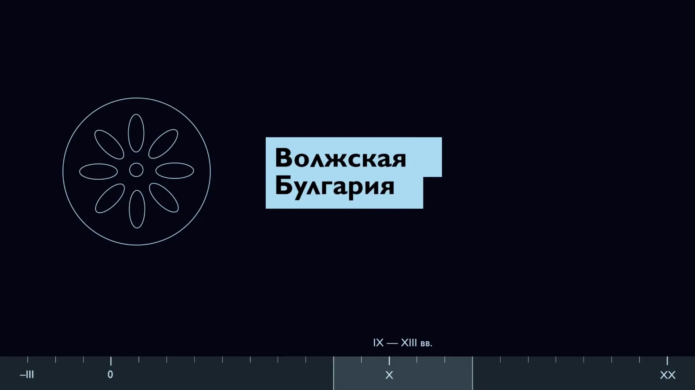

Выучи татарский язык в 2025
Удобно. Эффективно. С удовольствием.

Краткая история татар

От III в. до н.э. до XXI века
© Институт истории им. Ш.Марджани
Смотреть: Google Drive, VK Video, YouTube (16 мин.)
Скачать: Google Drive (77 mb)
Татарский язык
Агглютинативный, как и все тюркские языки, среди которых: башкирский, казахский, турецкий, азербайджанский и другие. Агглютинативность означает, что все грамматические формы образуются путём прибавления окончаний. Окончания приклеиваются друг к другу, и из-за этого могут получаться очень длинные слова. Например,
канәгатьләндерелмәгәнлегегездән
– 31 буква, 8 окончаний [перевод: ввиду того, что вы не были удовлетворены]